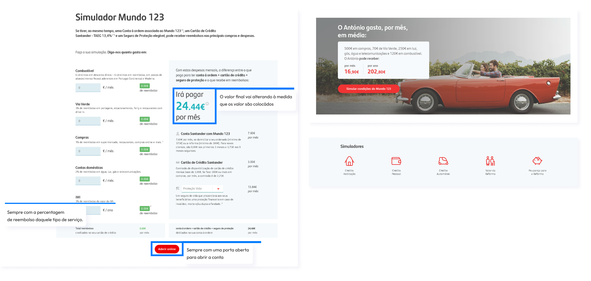
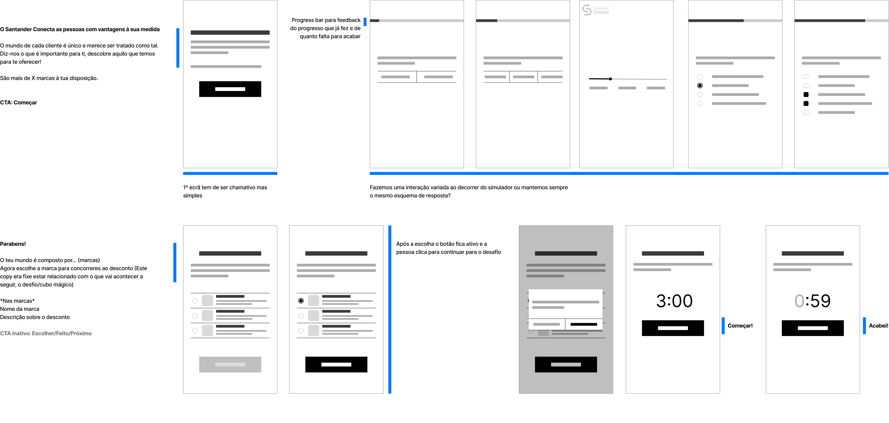
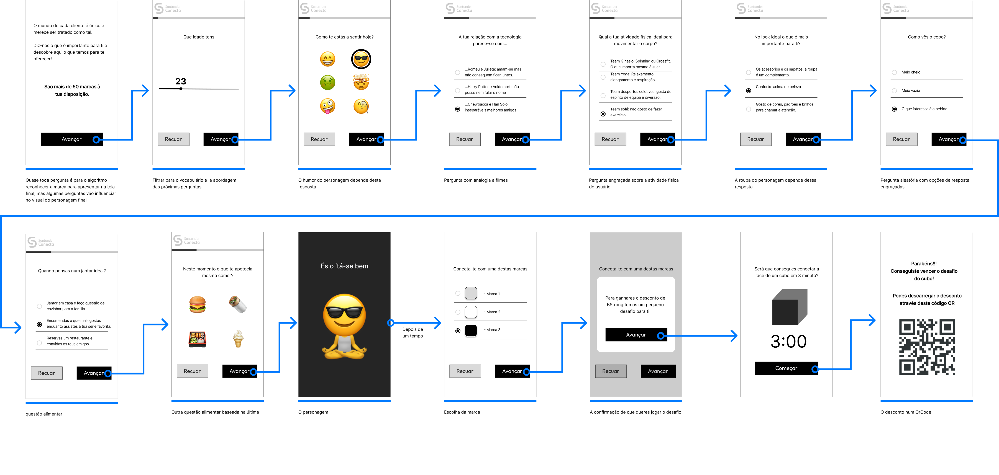

Posicionar uma marca nunca é algo fácil, muito menos um banco que é sempre algo sério e burocrático, onde as vantagens nem sempre agradam a todos os clientes.
Este projeto tem como objetivo mudar essa imagem, um programa feito para o Santander onde todas as vantagens são 100% costumizadas consoante o cliente.
Este projeto faz parte do programa de ensino EDIT. - Disruptive Digital Education e durou de 22 de junho até 24 de julho de 2022.

Fiz parte de uma equipa de nove pessoas, onde colaborei com profissionais de marketing, designers entreoutras.
Fiquei responsável pela pesquisa, estratégia de conteúdo e prototipagem.
Este estudo mostra apenas a minha parte do projeto, estratégia de campanha, criação de logotipo e processos do género não fazem parte do estudo.
Santander, em parceria com a Data 4 Deals, pretende lançar um Marketplace para oferecer mais vantagens e descontos costumizados para cada cliente.
O objetivo principal é deixar a imagem do banco diretamente associada às recompensas mantendo uma abordagem próxima, simples e justa.
Realizámos três entrevistas one-on-one, com o objetivo de entender como os Clientes Santander vêem o seu banco.
Algumas perguntas como:
Concluímos que os clientes não usufruem de todas as vantangens que uma conta Santander oferece e alguns nem sabiam as vantagem que tinham.

*Confirmámos que as pessoas normalmente escolhem o banco por influência familiar ou fase da vida (se estão na faculdade, se precisam de um empréstimo para uma casa, etc.)
Em simultâneo com as entrevistas aos clientes Santander, uma colega consultou um gerente do banco que esclareceu algumas dúvidas por parte do negócio, relacionadas com a percepção do funcionário ao vender os serviços do banco.
P: Em que momento é oferecida a opção de conta Mundo 123?
P: Quais as dificuldades/objeções na divulgação deste produto para os clientes?
"Só há neste momento a opção de abertura de conta 123. É oferecido sempre quando o cliente vai ao banco."
"Principalmente o cartão de crédito."
Após as entrevista lançámos um questionário online com 11 perguntas que enviámos a contactos com contas bancárias em Portugal, obtivemos um total de 198 respostas
A primeira pergunta era de filtro para distinguir quem era e quem não era cliente Santander, com um total de 198 respostas onde 21% era cliente Santander.


*73% dos 198 participantes afirmaram não ter vantagens, ou qualquer conhecimento sobre.
A minha parte para além de ajudar a desenvolver o questionário, era ir a uma agência Santander e apresentar-me como não cliente que pretendia se informar para abrir uma conta.
Eu sendo estudante e trabalhador autónomo, não tinha condições para ter um cartão de crédito, logo foi-me recomendado abrir uma conta universitário, isto faz com que o target passe de critério etário para a situação de vida.
Para dar um passo em frente é necessário analisar os passos que já foram dados. Para isso, pesquisámos o que o Santander já fazia para angariar novos clientes, analisámos alguns dos seus produtos digitais, que é a nossa área de atuação.
Tivémos acesso apenas a dois tipos de aplicações, uma conta "universitário" e outra com os três níveis do "mundo 123".
Ao analisar os produtos digitais do Santander reparámos que eles abordavam maioritariamente com o uso de simulações, para que os utilizadores vejam na prática com os seus gastos mensais, o que receberiam se entrassem no programa "mundo 123", o call to action do simulador são alguns banners com exemplos contextualizados.
De acordo com a pesquisa feita concluímos que os clientes não entendem ou conhecem as vantagens do seu banco e isso é devido à falta de comunicação.
Para estabelecer uma melhor relação com o cliente é preciso fazer com que eles vejam as vantagens e para isso foi decidido desenvolver uma campanha de ativação de marca para promover as vantagens de uma conta "mundo 123" do banco Santander.
Nesta altura do campeonato era necessário definir melhor o target, visto que tinhamos apenas um mês para desenvolver este projeto, dicidimos focar mais na tarefa de angariar novos clientes do que na de fidelizar os que já são.
O target principal passou a ser então Adultos dos 25 aos 40 anos, na zona de Lisboa e que não sejam clientes Santander.
A campanha terá três fases: Awareness, Consideration e Conversion, fases estas repletas de conteúdo digital e promoção nas redes sociais do banco, com o uso de posts, a criação de uma landing page e outras ferramentas.
Para entender e justificar a existência de uma peça como o simulador é necessário responder a algumas perguntas.
A título de curiosidade, fizemos um momento especial na apresentação final para a equipa do Santander, onde interagimos com o simulador projetado na parede.
Para manter a abordagem utilizada pelo Santander, para angariar novos clientes, até porque é uma ótima maneira de mostrar às pessoas como seria bom ter o seu produto, já que é como "experimentar um sapato antes de o comprar".
Adultos dos 25 aos 40 anos, na zona de Lisboa e que não sejam clientes Santander.
O simulador será exposto em alguns Mupis do grupo Mop - Multimédia Outdoors Portugal - Publicidade, S.a. na zona centro de Lisboa.
O simulador é composto por três partes: as perguntas, um desafio e um gancho de conversão de utilizador para cliente.
Todas as questões são de critério pessoal e conduzem até três marcas parceiras que se encaixem nas características do participante, assim que uma for escolhida é apresentado um desafio dinâmico em que se for completado no tempo definido, o Santander oferece um desconto nessa mesma marca (desconto esse que é diário para clientes "mundo 123").
A taxa de sucesso do simulador será definida por: quantidade de pessoas e o tempo que demoram a completar a simulação, o quão interagem deliberadamente com o simulador, a taxa de descontos utilizados em marcas parceiras e a receita final de angariação de novos clientes e fidelização de quem já era Santander com o aumento das regalias.
Primeiro, pesquisámos e analisámos diversos testes de escolha múltipla com o objetivo de entender o que os torna divertidos, prazerosos e simples.
Encontrámos alguns bem interessantes como Adobe Creative types e 16 personalities que nos ajudaram a concluir que o que faz a diferença é serem curtos, com perguntas divertidas, fáceis de entender e um personagem que nos represente como resultdo final.
Partimos para alguns esboços em papel (baixa difelidade) apenas para organizar a informação geral e ver o quão simplificado ficava.
Como exercício rápido de ideação, fizemos uma sessão de Crazy eights.

Os baixa fidelidade escolhidos em votação no exercício anterior de Crazy eights foram passados para o Figma e começámos a discutir o que seriam as perguntas, as respostas e algumas das interações.
Finalmente colocámos texto nos esboços, em colaboração com a equipa de copy que aprimorou as questões e opções de resposta.
É necessário frisar a dimenção de um TOMI, um ecrã de 50'' FullHD com dois metros de altura no total.
Tivémos que ter em atenção a posição dos botões, pois tal como num telemóvel ou tablet o quão mais para cima se vai mais esforço é necessário fazer, então concluímos que todos os clicáveis têm de ser alcançados da metade do ecrã para baixo, conclui-se também que otouch de um TOMI é pouco sensivel.
*Desenvolvemos um mapa de esforço para o ecrã do Mupi.

Gostava de destacar um extra que fiz neste projeto, devido a uma das minha paixões ser o desenho, decidi deixar o desafio mais interessante e desenvolver um personagem cativante e engraçado em vez de ir buscá-lo a um site.
A minha equipa aprovou e gostou bastante da ideia do personagem e então eu desenvolvi mais algumas ilustrações para o simulador.